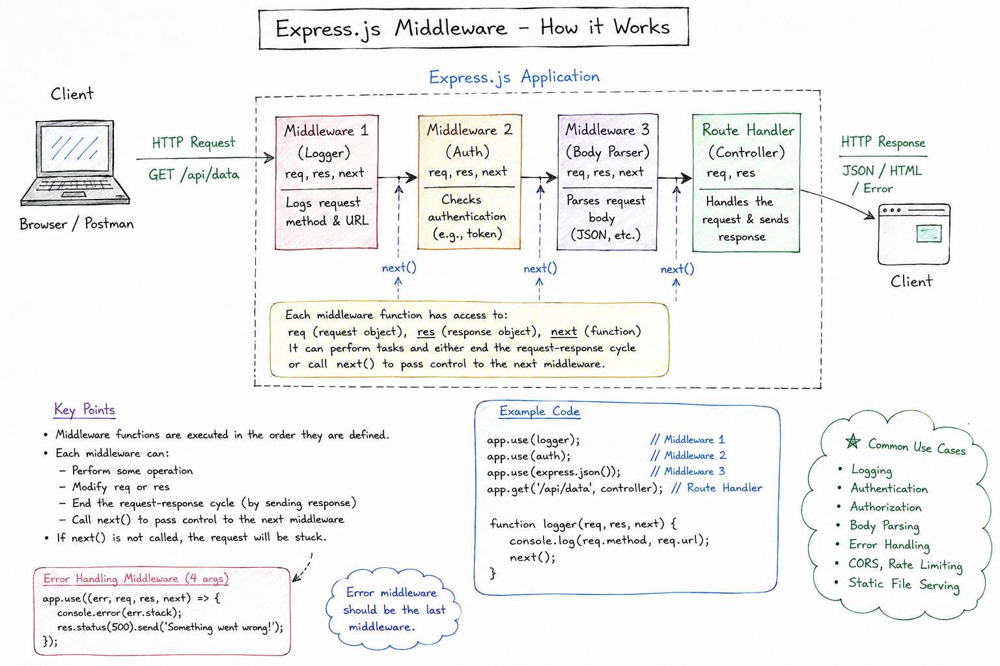

An interactive guide to mastering the middleware pattern
Middleware is a design pattern where functions are chained together to process requests sequentially. Each middleware function can:
Imagine a Student (Incoming HTTP Request) arriving at the entrance of a college campus. Before entering the Main Classroom / Exam Hall (Route Handler), the student passes through sequential checkpoint gates (Middleware functions), each inspecting, verifying, or modifying the student:
[GET /college/classroom] before waving them through (calls next()).
401 Unauthorized response). If valid, attaches req.student = studentInfo and passes them along (calls next()).
req.body data to the request object), modifying their attire for class.
res.json({ status: 200, degree: "B.Tech" }))!
req and res objects before the route handler constructs the final response!
You can also think of middleware like an assembly line in a factory:
Now that you have the intuitive college gate model in mind, let's map it directly onto the real technical architecture of an Express.js Application:

📌 Figure 1: Complete Express.js Request-Response Cycle & Middleware Execution Architecture
The client (Browser or Postman) initiates an HTTP Request (e.g., GET /api/data) entering the Express.js application.
Functions like Logger, Auth, and Body Parser execute in order. Each accesses (req, res, next) and calls next() to pass control forward.
The route handler processes the request logic and sends back an HTTP Response (JSON / HTML / Status code) ending the cycle.
Special error-handling middleware uses 4 arguments (err, req, res, next) and must be declared last in the application setup.
Watch how a request flows through middleware:
Here's how to implement a simple middleware system from scratch:
// Middleware System Implementation
class MiddlewareSystem {
constructor() {
this.middlewares = [];
}
// Add middleware to the chain
use(fn) {
this.middlewares.push(fn);
return this; // Enable chaining
}
// Execute all middleware in sequence
async execute(context) {
let index = 0;
const next = async () => {
if (index >= this.middlewares.length) return;
const middleware = this.middlewares[index++];
await middleware(context, next);
};
await next();
return context;
}
}
// Example Usage
const app = new MiddlewareSystem();
// Middleware 1: Logger
app.use(async (ctx, next) => {
console.log(`[${new Date().toISOString()}] ${ctx.method} ${ctx.path}`);
await next(); // Pass to next middleware
});
// Middleware 2: Authentication
app.use(async (ctx, next) => {
if (!ctx.user) {
ctx.status = 401;
ctx.body = 'Unauthorized';
return; // Stop here if not authenticated
}
await next();
});
// Middleware 3: Main Handler
app.use(async (ctx, next) => {
ctx.body = `Hello, ${ctx.user}!`;
await next();
});
// Execute the chain
const context = {
method: 'GET',
path: '/hello',
user: 'Alice'
};
app.execute(context);
context (shared data) and next (function to call next middleware)next() passes control to the next middlewarenext() stops the chain (useful for errors or early responses)next()Middleware follows an "onion model" - the request goes through layers going IN, and the response goes through the same layers coming OUT:
Request → [MW1 → [MW2 → [MW3 → Handler] ← MW3] ← MW2] ← MW1 → Response Example execution: 1. MW1: Before next() 2. MW2: Before next() 3. MW3: Before next() 4. Handler: Process request 5. MW3: After next() 6. MW2: After next() 7. MW1: After next()
// Demonstrating the Onion Model
app.use(async (ctx, next) => {
console.log('→ MW1: Before');
await next();
console.log('← MW1: After');
});
app.use(async (ctx, next) => {
console.log(' → MW2: Before');
await next();
console.log(' ← MW2: After');
});
app.use(async (ctx, next) => {
console.log(' → Handler: Processing');
});
// Output:
// → MW1: Before
// → MW2: Before
// → Handler: Processing
// ← MW2: After
// ← MW1: After
Verify user identity before processing requests
app.use(async (ctx, next) => {
const token = ctx.headers.token;
if (!isValid(token)) {
ctx.status = 401;
return;
}
ctx.user = decode(token);
await next();
});
Track requests and responses for debugging
app.use(async (ctx, next) => {
const start = Date.now();
await next();
const ms = Date.now() - start;
console.log(
`${ctx.method} ${ctx.url} - ${ms}ms`
);
});
Check request data before processing
app.use(async (ctx, next) => {
if (!ctx.body.email) {
ctx.status = 400;
ctx.body = 'Email required';
return;
}
await next();
});
Catch and handle errors gracefully
app.use(async (ctx, next) => {
try {
await next();
} catch (err) {
ctx.status = 500;
ctx.body = 'Server Error';
console.error(err);
}
});